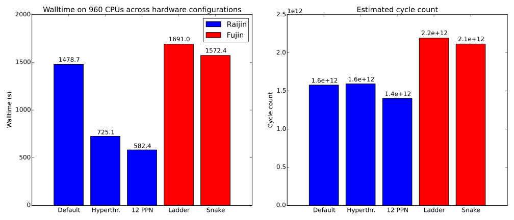
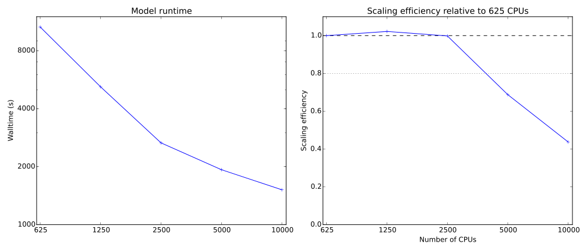

Scalability of global MOM ocean simulations at NCI
Marshall Ward
National Computational Infrastructure
Yuanyuan Zhang
Fujitsu Australia Limited
MOM: The Modular Ocean Model
- Mixed finite difference / finite volume ocean model
- Consistently strong performance in CMIP studies
- FMS modelling framework
- Coupled to SIS: Sea Ice Simulator
0.25°-resolution experiment

- Based on GFDL's CM2.5
- CORE atmosphere forcing
- 1440 x 1080 x 50 grid points
- Tripolar grid
- 31 day run (1488 timestep)
- 5 day diagnostic output
- 72 sea ice steps per ocean step
Most oceanographers would call this "eddy-permitting"
Tile Decomposition

Tile Boundary Caches (Halos)

Platforms
Raijin (雷神)

- 57,472 cores (3592 nodes, 16 core / node)
- Intel Xeon (Sandy Bridge), 3 GHz (turbo)
- 32 GiB per node
- 56 Gb/s Infiniband network
- Two-level switched fabric fat tree
- ~1.4 PFlop peak (TOP500: #52)
FX10 / Fūjin (風神)
- 1536 cores (96 nodes, 16 core / node)
- SPARC64 IXfx, 1.848 GHz
- ~31 GiB per node
- 100 Gb/s (bidirectional) Tofu interconnect
- ~240 GFlop peak
Tofu Interconnect
- Tofu unit: 12 nodes (192 cores)
- 3D (2x3x2) torus
- Fūjin: 8 units
Layouts should emphasise nearest-neighbour communication.
"Ladder" layout
- Dashed lines divide cores, Solid lines divide nodes
- Non-neighbor messages between node corners
"Snake" layout
- One node per latitude line
- All messages are nearest-neighbor
Results
Test Cases
Raijin
- Default Configuration
- Hyperthreading enabled
- Undercommitted nodes (12 active, 4 inactive)
Fūjin
- "Ladder" process layout
- "Snake" process layout
Platform comparison
$N_{\text{cyc}} \approx f * T$
Platform comparison
Ignoring communication
$N_{\text{cyc}} \approx f * T * (1 - p_{\text{comm}})$
0.25° scaling

- Efficient scaling up to 960 CPUs
- Unused cores relieve some resource bottleneck
- FX10 "snake" layouts are ~10% faster than "ladder"
Raijin 0.25° scaling (update)

- post-CentOS 6.6 update
- MOM codefix enables runs up to 7680 CPUs
- Hyperthreading impact shifted to 1920 CPUs
MPI communication time
Raijin MPI communication time (update)
Submodel scaling
Raijin submodel scaling (update)

Ocean submodel comparison
$N_{\text{cyc}} \approx f * T$
Ocean submodel comparison
Ignoring communication
$N_{\text{cyc}} \approx f * T * (1 - p_{\text{comm}})$
0.25° Performance
| CPUs | Years/day | Efficiency |
|---|---|---|
| 960 | 11 | 91% |
| 960 (+ 320) | 13 | 74% |
| 3840 | 27 | 42% |
| 3840 (+ 1280) | 29 | 33% |
(Efficiency is relative to 240 CPUs with hyperthreading)
0.25° summary
- Raijin is about 2x faster than Fūjin (mostly clock speed)
- Similar scalability on both platforms
- Nearest neighbor layouts are ~10% faster on Fūjin
- Hyperthreading can maintain scalability on Raijin
- Ocean performance good; sea ice and coupler not so good
- System environment is still a volatile unknown
Global 0.1° simulation

- GFDL CM 2.6 experiment
- CORE atmosphere forcing
- 3600 x 2700 x 50 grid points
- 10 day simulation
- Hyperthreading enabled
- Fully committed (16 processes per node)
- Output disabled
A global eddy resolving model
0.1° Scaling
Poor scaling at 5000 CPUs...
0.1° Scaling (main loop)
... but mostly due to initialization
The timestep loop scales very well!
0.1° Submodel Scaling
0.1° Communication
(10k communication inferred from a slower run)
Future Work
- 0.1° scales surprising well, we should go higher!
- Projected output is ~3 years / day
- We need to double this to enable productive climate science
- Scalability beyond 10k will require code changes
- Australia is still 5 years behind in 0.1° modelling!
(See workshop for more info)